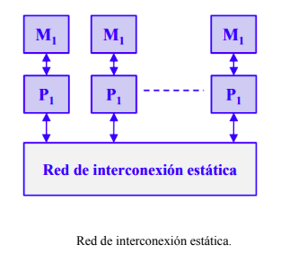

Los multicomputadores utilizan redes estáticas con enlaces directos
entre nodos. Cuando un nodo recibe un mensaje lo procesa si viene
dirigido a dicho nodo. Si el mensaje no va dirigido al nodo receptor
lo reenvía a otro por alguno de sus enlaces de salida siguiendo un
protocolo de encaminamiento.

Propiedades más significativas
- Topología de la red: determina el patrón de interconexión
entre nodos.
- Diámetro de la red: distancia máxima de los caminos más
cortos entre dos nodos de la red.
- Latencia: retardo de tiempo en el peor caso para un mensaje
transferido a través de la red.
- Ancho de banda: Transferencia máxima de datos en
Mbytes/segundo.
- Escalabilidad: posibilidad de expansión modular de la red.
- Grado de un nodo: número de enlaces o canales que inciden
en el nodo.
- Algoritmo de encaminamiento: determina el camino que
debe seguir un mensaje desde el nodo emisor al nodo receptor.